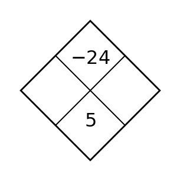
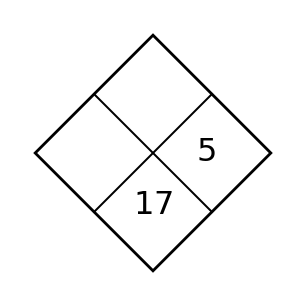
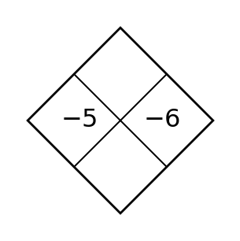
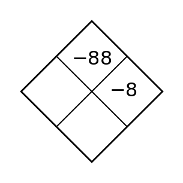
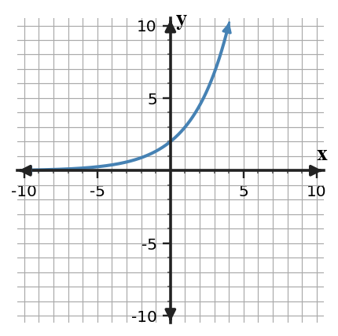
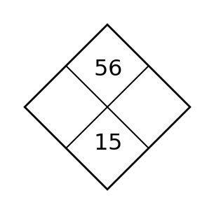
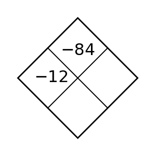
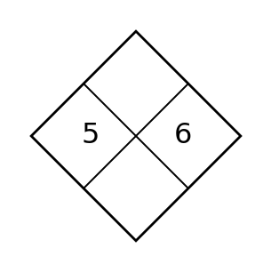
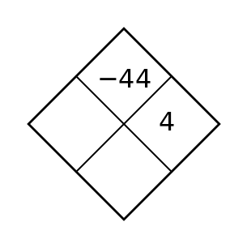
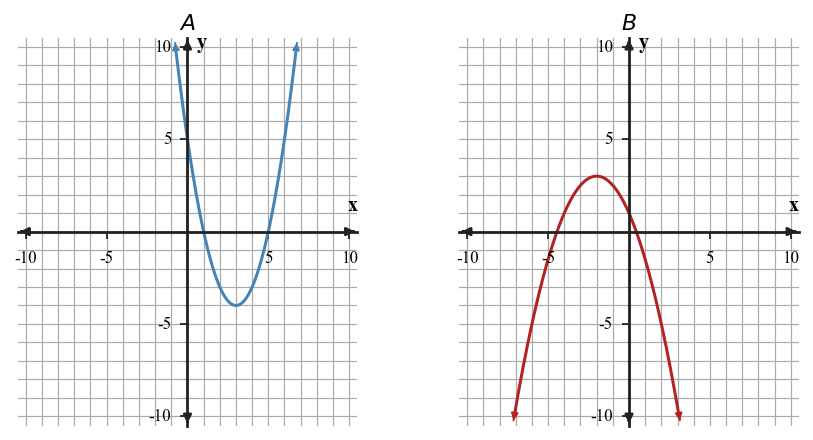

Section 7.1 — Day 1
For each sequence, decide whether it shows repeated addition, repeated multiplication, or neither. State the common difference or common ratio when one exists.
- 3, 9, 27, 81, ...
- 48, 40, 32, 24, ...
- 2, 5, 10, 17, ...
- 120, 60, 30, 15, ...
Use the zero product property to solve each equation.
- $(x-3)(x+5)=0$
- $(2x-7)(x+1)=0$
Spiral: Use the table to factor the polynomial shown by the terms.
| Term | $16x^3$ | $24x^2$ | $-40x$ |
|---|---|---|---|
| Common numeric factor | $8$ | $8$ | $8$ |
| Common variable factor | $x$ | $x$ | $x$ |
Write the polynomial as a product of the greatest common factor and a remaining polynomial.
Formative Spiral: Use the diamond. The top number is the product of the two side numbers, and the bottom number is their sum. Fill in the missing cell(s).

Section 7.1 — Day 2
Decide whether each generator produces a geometric sequence. Explain one choice.
- Start at 6; multiply by 4 each step.
- Start at 6; add 4 each step.
- Start at 6; multiply by 0.75 each step.
- Start at 6; add 4, then add 8, then add 12.
Find the missing factor: $x^2-11x+30=(x-5)(\,?\,)$.
Spiral: Which term prevents all three terms from sharing a factor of $4x$?
$12x^2+20x+16$
State the term and the greatest common factor the three terms do share.
Formative Spiral: Use the diamond. The top number is the product of the two side numbers, and the bottom number is their sum. Fill in the missing cell(s).

Section 7.1 — Day 3
A relationship has outputs 12, 18, 27, 40.5 at inputs 0, 1, 2, 3. Explain why a constant difference test is not enough, then identify the constant ratio.
Solve or interpret the quadratic situation for Solving Quadratics by Factoring. Show the algebra that supports your answer.
The graph shows a quadratic. Estimate the zeros, then write a possible factored equation.

Spiral: For $36a^4b^2-24a^3b+12a^2b$, find the greatest common monomial factor and write the factored form.
Formative Spiral: Use the diamond. The top number is the product of the two side numbers, and the bottom number is their sum. Fill in the missing cell(s).

Section 7.2 — Day 1
For each equation, identify the initial value and the multiplier.
| Equation | Initial value | Multiplier |
|---|---|---|
| $f(x)=7(3)^x$ | ||
| $g(x)=120(0.75)^x$ | ||
| $h(x)=42(1.08)^x$ |
Find the constant that completes each square.
- $x^2+8x+\Box$
- $x^2-10x+\Box$
Spiral: Complete the table for $2x^2+5x+3$ and use it to write the factored form.
| Step | Value |
|---|---|
| Product $ac$ | $6$ |
| Needed sum | $5$ |
| Number pair | _____ and _____ |
| Factored form | _____ |
Formative Spiral: Use the diamond. The top number is the product of the two side numbers, and the bottom number is their sum. Fill in the missing cell(s).

Section 7.2 — Day 2
Fill in the missing equation part.
| Context | Equation |
|---|---|
| Starts at 30 and doubles | $y=30(\,\_\,)^x$ |
| Starts at 500 and keeps 70% | $y=\_\_(0.7)^x$ |
| Starts at 18 and grows by 12% | $y=18(\_\_)^x$ |
Solve $(x+3)^2=25$.
Spiral: Decide whether each trinomial appears factorable over the integers by checking product-sum possibilities.
- $x^2-x-6$
- $2x^2+5x+7$
- $3x^2+13x+4$
Formative Spiral: Use the diamond. The top number is the product of the two side numbers, and the bottom number is their sum. Fill in the missing cell(s).

Section 7.2 — Day 3
The table shows the value of a collectible.
| Year | 0 | 1 | 2 | 3 |
|---|---|---|---|---|
| Value | $\$80$ | $\$96$ | $\$115.20$ | $\$138.24$ |
Write an exponential equation and use it to predict the value in year 6.
Solve or interpret the quadratic situation for Solving Quadratics by Factoring. Show the algebra that supports your answer.
Find the zeros and the axis of symmetry for $(x-1)(x-7)=0$.
Spiral: Write a trinomial with leading coefficient $1$, constant term $-28$, and middle coefficient $3$. Then factor it.
Formative Spiral: Use the diamond. The top number is the product of the two side numbers, and the bottom number is their sum. Fill in the missing cell(s).

Section 7.3 — Day 1
For each equation, identify the y-intercept and decide whether the graph approaches the x-axis from above or below as x increases.
| Equation | y-intercept | Long-run behavior |
|---|---|---|
| $f(x)=4(0.5)^x$ | ||
| $g(x)=2(3)^x$ | ||
| $h(x)=8(0.8)^x$ |
Identify $a$, $b$, and $c$ for each equation.
- $x^2-5x+6=0$
- $2x^2+3x-4=0$
Spiral: Complete the table and use it to factor the trinomial.
| Expression | First square | Last square | Middle check |
|---|---|---|---|
| $4x^2-20x+25$ | _____ | _____ | _____ |
Use the signs to write the correct squared binomial.
Formative Spiral: Use the diamond. The top number is the product of the two side numbers, and the bottom number is their sum. Fill in the missing cell(s).

Section 7.3 — Day 2
State the horizontal asymptote for each function.
- $y=5(2)^x$
- $y=3(0.7)^x$
- $y=2(1.5)^x+4$
- $y=9(0.5)^x-1$
Fill the blank: $(x-7)^2=x^2-14x+\Box$.
Spiral: Factor completely by first removing a common factor: $8x^2-72$.
Formative Spiral: Use the diamond. The top number is the product of the two side numbers, and the bottom number is their sum. Fill in the missing cell(s).

Section 7.3 — Day 3
Use the graph to estimate the equation from the choices. Justify your choice using the y-intercept and one other point.

- $y=2(1.5)^x$
- $y=4(1.5)^x$
- $y=2(0.5)^x$
Solve or interpret the quadratic situation for Completing the Square. Show the algebra that supports your answer.
The graph shows a quadratic. Use the vertex to write a vertex-form equation.

Spiral: Factor completely: $12x^2-75$.
Formative Spiral: Use the diamond. The top number is the product of the two side numbers, and the bottom number is their sum. Fill in the missing cell(s).

Section 7.4 — Day 1
For each table, decide whether first differences, second differences, or ratios are the most useful evidence.
| $x$ | 0 | 1 | 2 | 3 | 4 |
|---|---|---|---|---|---|
| A | 5 | 9 | 13 | 17 | 21 |
| B | 2 | 6 | 18 | 54 | 162 |
| C | 1 | 4 | 9 | 16 | 25 |
Choose factoring, square roots, completing the square, or quadratic formula as the most efficient method.
- $(x-4)(x+9)=0$
- $x^2+5x+6=0$
Spiral: For $y=2x^2-7x+3$, give the y-intercept and the two x-intercepts. Show how factoring supports the x-intercepts.
Formative Spiral: Use the diamond. The top number is the product of the two side numbers, and the bottom number is their sum. Fill in the missing cell(s).

Section 7.4 — Day 2
Choose the family that best fits each model.
- $A(n)=50+12n$
- $B(n)=50(1.12)^n$
- $C(n)=n^2+50$
- $D(n)=50(0.88)^n$
Explain why $a$ cannot be $0$ in the quadratic formula.
Spiral: Use the graph to name the x-intercepts and decide whether the vertex is above or below the x-axis.

Formative Spiral: Use the diamond. The top number is the product of the two side numbers, and the bottom number is their sum. Fill in the missing cell(s).

Section 7.4 — Day 3
A table has constant second differences but ratios that are not constant. What family does this support? Create a small example table that fits the description.
Solve or interpret the quadratic situation for Completing the Square. Show the algebra that supports your answer.
Use vertex form to decide whether $y=x^2-6x+12$ has real zeros.
Spiral: Find the zeros of $y=3x^2-10x+2$ to the nearest tenth using a graphing or table strategy. Explain why factoring over integers is not efficient here.
Formative Spiral: Use the diamond. The top number is the product of the two side numbers, and the bottom number is their sum. Fill in the missing cell(s).

Section 7.5 — Day 1
Identify the starting value and approximate multiplier from each data table.
| Time | 0 | 1 | 2 | 3 |
|---|---|---|---|---|
| Data A | 100 | 120 | 144 | 172.8 |
| Data B | 500 | 400 | 320 | 256 |
Identify the vertex, intercepts, or domain feature most useful for the context.
- $h(t)=-16t^2+48t$
- $A(x)=x(20-x)$
Spiral: For $f(x)=x^2-6x+5$, write factored form and vertex form. Then identify the zeros, vertex, and y-intercept.
Formative Spiral: Use the diamond. The top number is the product of the two side numbers, and the bottom number is their sum. Fill in the missing cell(s).

Section 7.5 — Day 2
Read the scatter plot and identify one point that is noticeably above or below the overall trend.

Which method fits $3x^2+10x+8=0$ best?
Spiral: Identify the zeros from each factored-form function.
- $y=(x-4)(x+5)$
- $y=-3(x+2)(x-1)$
- $y=2(x-6)^2$
Formative Spiral: Use the diamond. The top number is the product of the two side numbers, and the bottom number is their sum. Fill in the missing cell(s).

Section 7.5 — Day 3
The table is not perfectly exponential.
| Week | 0 | 1 | 2 | 3 | 4 |
|---|---|---|---|---|---|
| Plants | 40 | 52 | 70 | 91 | 119 |
Estimate a reasonable multiplier and explain why your model is approximate.
Solve or interpret the quadratic situation for Quadratic Formula. Show the algebra that supports your answer.
The graph shows a quadratic with irrational intercepts. Estimate the roots, then use the quadratic formula on $x^2-9x+17=0$ and compare the results.

Spiral: Compare Graph A and Graph B. For each graph, identify one feature that would be easiest to represent with vertex form and one feature easiest to represent with factored form.

Formative Spiral: Use the diamond. The top number is the product of the two side numbers, and the bottom number is their sum. Fill in the missing cell(s).